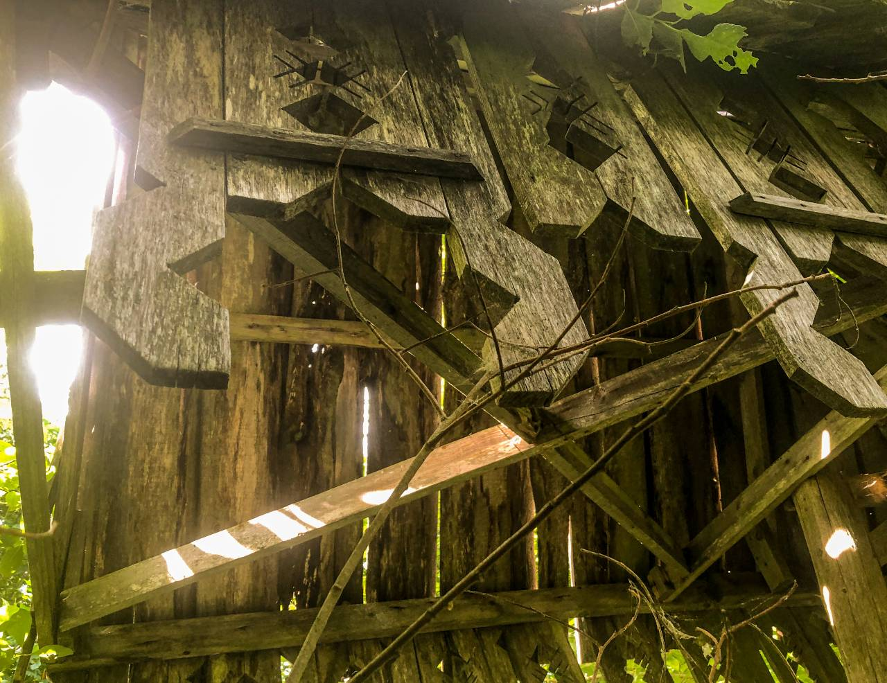
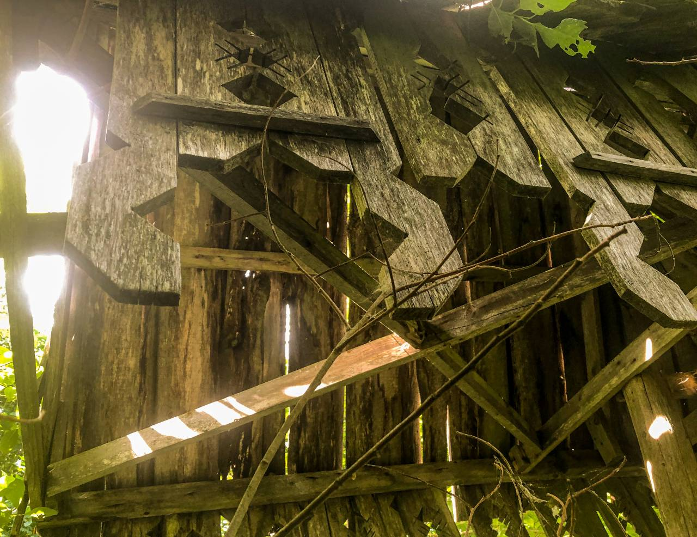
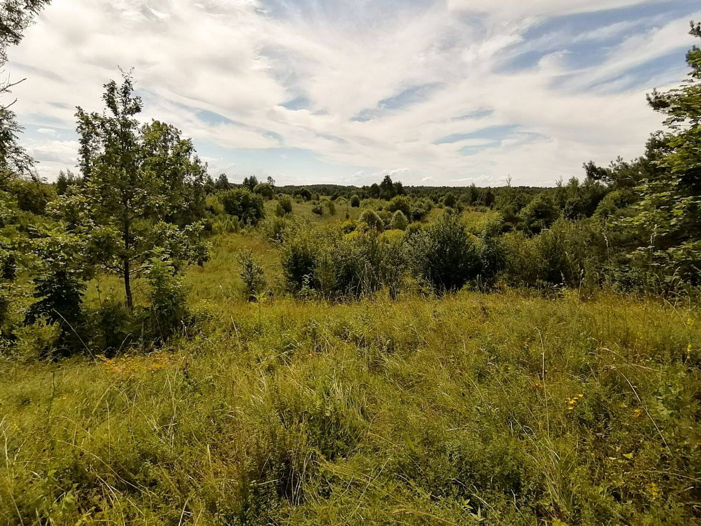
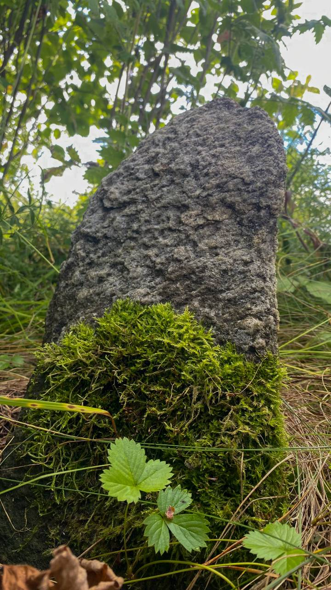

Ці бывалі вы калі-небудзь на першых хрысціянскіх могілках?
 

Адно з нямногіх месцаў пахавання першых хрысціян 13 -14 стагоддзя, знаходзіцца недалёка ад мястэчка Лынтупы. Такія могілкі называліся "Жальнік" (ад бел. "жаль" – скруха). Іх некалькі на ўсёй тэрыторыі Беларусі. Хавалі тады хрысціян так: закопвалі на некалькі метраў у зямлю, шукалі камень з плоскім бокам, часам выбівалі крыжык, які нярэдка можна было знайсці толькі навобмацак, і ставілі на месца пахавання.
 Яшчэ да з'яўлення на гэтым месцы Жальніка тут знаходзілася капішча (паганскі храм пад адкрытым небам) багіні памерлых Мары, якая паводле паданняў асвятляла праведным душам дарогу ў паганскі яблыневы (райскі) сад. Даведацца пра размяшчэнне тут паганскага капішча дапамаглі сярэднявечныя паганскія крыніцы і апавяданні мясцовых жыхароў.
Запісаў Андрэй Вішнеўскі.